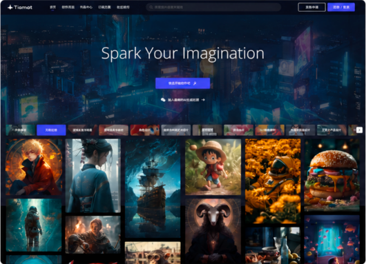
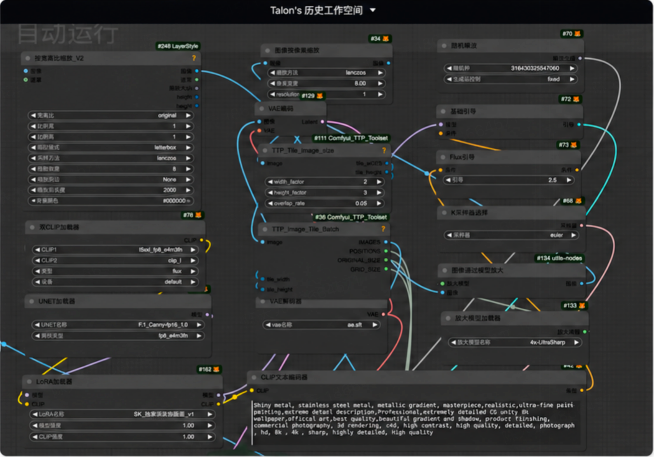
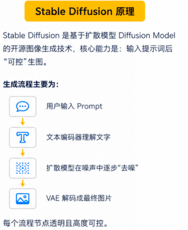

市场判断
差异化技术机会
- LLM 训练成本与资源门槛极高，留给创业公司的机会相对有限。
- 图像生成领域仍存在机会，尤其是国产模型与垂类模型。
THE EVOLUTION / AI 趋势
1950
AI 概念诞生开始
2015
扫脸车牌识别普及，
AlphaGo
2022
LLM “智能”涌现
2024
多模态模型
2025
Agent 成为主流
2026
Computer Use Agent
现在
未来
CASE 01 / Tiamat 生图平台

CASE 01 / 为什么做
CASE 01 / 怎么做


CASE 01 / 终局
REFLECTION / 反思
LOOKING AHEAD / 总结
模型从单一任务走向多模态融合，从内容生成走向复杂任务执行。
推理成本的下降，将推动更多 AI 能力进入大众化、高频化的应用场景。
AI 持续降低生产门槛，推动生产效率、内容供给、交互形式不断扩张。
不仅要判断今天什么能做，更要预判明天什么会成为基础能力。